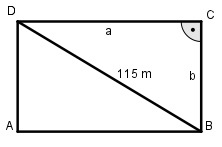
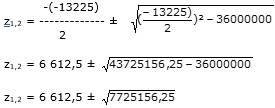

Ein rechteckiger Platz mit einer Diagonalen von 115 m und einer Fläche von 6 000 m2 wird umzäunt. Welche Holzmenge ist erforderlich, wenn für den laufenden Meter 0,25 m2 Holz gebraucht werden? Wie groß ist die längere Rechteckseite?
Satz von Pythagoras im Dreieck DBC: 1152 = a2 + b2 Für die Fläche gilt: 6000 = a * b |b 6000 a = ------ b Eingesetzt: 6000 1152 = (-------)2 + b2 b 36 000 000 13 225 = ------------- + b2 | *b2 b2 13 225 b2 = 36 000 000 +b4 |-13 225b2 b4 – 13 225b2 + 36 000 000 = 0 Substitution: Setze b2 = z z2 - 13 225z + 36 000 000 = 0 p, q - Formel p = -13 225 ; q = 36 000 000
z1,2 = 6 612,5 ± 2 779,4 z1 = 6 612,5 + 2 779,4 = 9 391,9 z2 = 6 612,5 – 2 779,4 = 3 833,1 Rücksubstitution: b1,22 = 9 391,9 |√ b1 = 96,9 m längere Seite des Rechtecks b2 = - 96,9 keine Lösung, negative Länge b3,42 = 3 833,1 |√ b3 = 61,9 m kürzere Seite des Rechtecks b4 = - 61,9 keine Lösung, negative Länge U = 2 * 96,9 m + 2 * 61,9 m = 317,6 m Holzvolumen V: V = 0,25 m3/m * 317,6 m = 79,4 m3